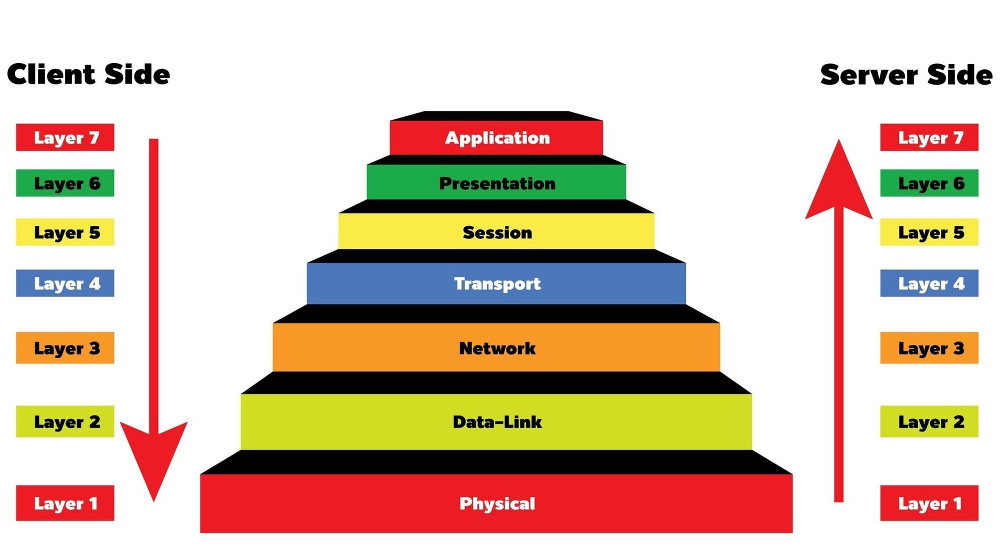
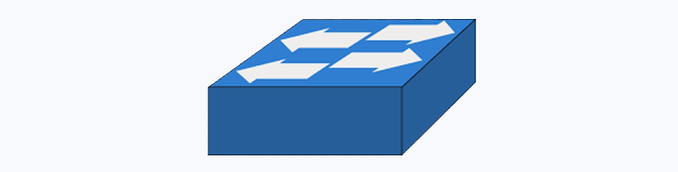
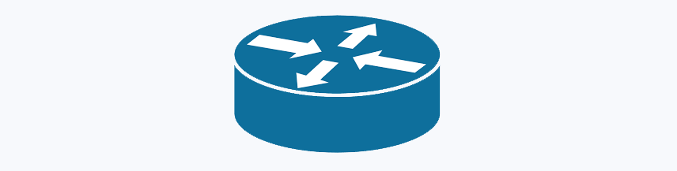
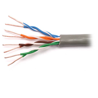

تعلم أساسيات الشبكات والبيانات والأنظمة الرقمية
ICT : Information and Communication Technology
تقنية المعلومات والاتصالات
تعرف على أساسيات الشبكات، أنواعها، طوبولوجياتها، ومكوناتها الأساسية مثل الموجهات والموزعات.
ابدأ التعلم اختبارافهم بنية البيانات، وحدات القياس، وتمثيل المعلومات في الحاسوب.
ابدأ التعلم اختبارتعلم النظام الثنائي، النظام السادس عشر، والتحويل بين الأنظمة العددية المختلفة.
ابدأ التعلم اختبار
تعلم الطبقات السبع لنموذج OSI وكيفية عمل الشبكات بشكل منظم ومنهجي.
ابدأ التعلم اختبارافهم عناوين IP وMAC وتقسيم الشبكات الفرعية وكيفية عمل العناوين في الشبكات.
ابدأ التعلم اختبار
تعلم كيفية عمل الموزعات، أوامر الإدارة الأساسية، وأفضل الممارسات لإدارة الشبكات.
ابدأ التعلم اختبار
تعلم أساسيات الموجه، الإعدادات الأساسية، تكوين المنافذ وعناوين IP مع أمثلة عملية.
ابدأ التعلم اختبارتعرف على أنواع البروتوكولات المختلفة، كيفية عملها، ومقارنة بين TCP و UDP وأمثلة عملية.
ابدأ التعلم اختبار
تعلم كيفية توصيل كابل الشبكة CAT5e، فهم الألوان والترقيم، والتوصيل المستقيم والمتقاطع.
ابدأ التعلم اختبارشرح أوامر الشبكة في موجه الأوامر مع أمثلة عملية: ipconfig، ping، tracert، وغيرها.
افتح الصفحة اختبارتعلم تقنية VLAN، التكوين، والـ TRUNK مع أمثلة عملية وتطبيقات حقيقية في الشبكات.
ابدأ التعلم اختباراختبر معرفتك في مادة الشبكات: المقدمة، الأنظمة العددية، البيانات، نموذج OSI، وعناوين الشبكة (20 سؤالاً).
ابدأ الامتحانهذا الموقع التعليمي مصمم لمساعدتك في فهم أساسيات الشبكات والأنظمة الرقمية. يتم تقديم المحتوى باللغة العربية مع أمثلة عملية ورسوم توضيحية.
المستوى: مبتدئ إلى متوسط
اللغة: العربية
التنسيق: HTML مع CSS مدمج
© 2024 YousefClass - جميع الحقوق محفوظة